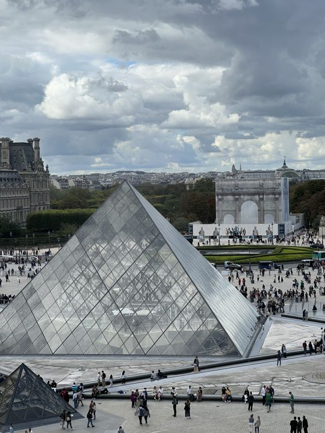
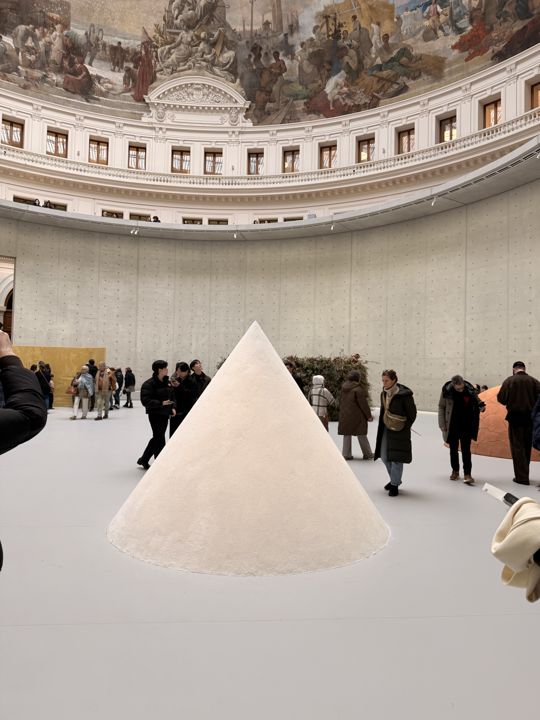
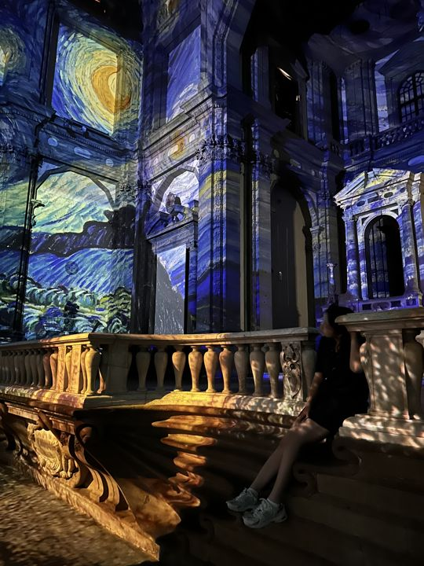
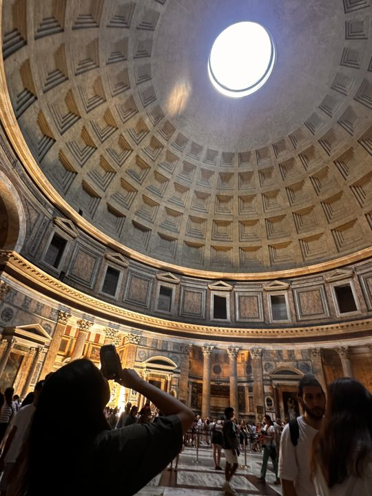
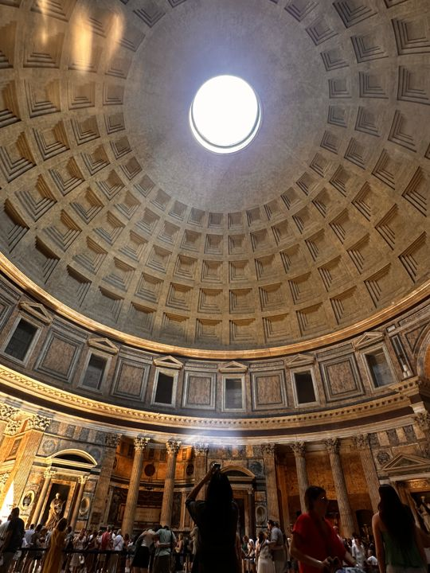

Cultural Journeys
Museums and cultural sites, grouped by city.
Musée d'Orsay, Paris
Photos: 13
Impressionist masterpieces housed in a Beaux-Arts railway station on the Left Bank.


Musée du Louvre, Paris
Photos: 29
The world's largest art museum, from the Mona Lisa to the Winged Victory of Samothrace.





Musée de l'Orangerie, Paris
Photos: 4
Monet's Water Lilies in elliptical rooms he designed himself.


Bourse de Commerce — Pinault Collection, Paris
Photos: 15
Tadao Ando's concrete cylinder inside an 18th-century grain exchange.




Palais de Tokyo, Paris
Photos: 20
Europe's largest platform for contemporary art, raw concrete by the Seine.


Musée d'Art Moderne de Paris
Photos: 15
Matisse's three-panel monument and the city's collection of modern masters.


Musée Jacquemart-André, Paris
Photos: 1
A Gilded Age mansion with Fragonard, Bellini and medieval tapestries.

Petit Palais, Paris
Photos: 6
The Belle Époque glass atrium of the city's fine-arts palace.


Palais Garnier, Paris
Photos: 3
Garnier's marble staircase and Chagall's ceiling — the phantom's opera house.


Palace of Versailles
Photos: 9
The Sun King's gilded court: Hall of Mirrors, royal apartments and endless formal gardens.


Städel Museum, Frankfurt
Photos: 14
Seven centuries of painting, from Cranach's Venus to the German Impressionists.


Galleria degli Uffizi, Florence
Photos: 9
Botticelli's Venus and the Medici's unmatched Renaissance collection.


Van Gogh Immersive Exhibition, Florence
Photos: 8
Starry Night projected across the vaults of a historic Florentine palace.




Teatro alla Scala Museum, Milan
Photos: 11
Verdi's stage — boxes, chandeliers and the costumes of La Scala.


The Pantheon, Rome
Photos: 6
Two millennia of engineering: the world's largest unreinforced concrete dome.




San Luigi dei Francesi, Rome
Photos: 5
A quiet French church holding Caravaggio's brilliant Contarelli Chapel.


Vatican Museums
Photos: 4
Raphael's Rooms and the Sistine Ceiling — the artistic heart of the Catholic Church.


Galleria Borghese, Rome
Photos: 5
Bernini's marble drama and Caravaggio's shadows inside a cardinal's villa.


MAXXI — National Museum of 21st Century Arts, Rome
Photos: 1
Zaha Hadid's concrete ribbons of contemporary art and architecture.

Galleria Nazionale d'Arte Moderna, Rome
Photos: 10
Italian modernism from the Macchiaioli to de Chirico's metaphysical spaces.


Venice
Photos: 2
Lagoon light, Byzantine domes and the slow theatre of the canals.


Venice Biennale
Photos: 41
The world's oldest art exhibition: national pavilions and the Arsenale halls.


Expo 2025 Osaka
Photos: 15
The Grand Roof and national pavilions on Yumeshima — technology as public art.


Kunsthaus Zürich
Photos: 17
From Hodler and Giacometti to Warhol on the Limmat.